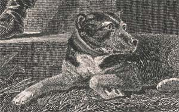
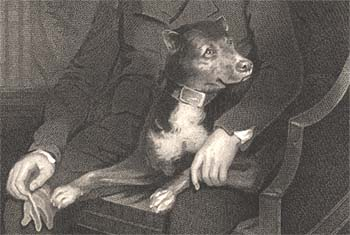
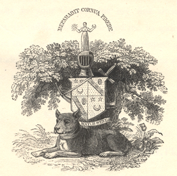

|
|
Home | Corson
Collection | Biography | Works | Image
Collection | Recent
Publications | Correspondence | Forthcoming
Events | Links | E-texts | Contact
Camp: Scott's Favourite Dog
Scott's bull terrier Camp features prominently in three early
portraits of the author by James Saxon (1805)
and Sir Henry Raeburn (1808 and 1809). In a letter of 11 March
1828 to the bookseller John Stevenson, Scott supplies the following
biography and character-sketch to accompany a picture of Camp by
the Edinburgh animal-painter James Howe (now apparently lost):
Camp was got by a black and tan English terrier calld
[sic] Doctor the property of Mr. Storie, Farrier in Rose Street
about 1800 out
of a thorough-bred English brindled bull-bitch the property of
Mr. John Adams of the Riding School Adjutant to the Royal Edinburgh
Volunteer cavalry. He was of great strength
and very handsome extremely sagacious faithful and affectionate to the human
species and possessed
of a great turn for gaiety and drollery. Although he was never taught any tricks
he learned some of his own accord and understood whatever was
said to him as well as any creature I ever
saw. His great fault was an excessive ferocity towards his own species which
sometimes brought his Master and himself into dangerous scrapes.
He used to accompany me always in coursing of which he was a great amateur and
was one of the best dogs
for finding hares I ever saw though I have since had very fine terriers. At last
he met with an accident which gave him a sprain in the back from
which he never recovered after which he could
not follow when I went out on horseback. The servant used to tell him when I
was seen coming home. I lived then at Ashestiel and
there were two ways by which I might return. If the servant
said, " Camp,
your Master is coming back by the hill," he
ran to meet me in that direction. If the lad said, "by the ford," he
came down to the bank of the river to welcome me ; nor did he ever make a
mistake in the direction named. I might mention many instances of similar
sagacity. He
was seldom scolded or punished and except in his pugnacious propensities
I never saw so manageable a dog. I could even keep him from fighting so long
as I had
my eye on him but if I quitted my vigilance for a moment he was sure to worry
the dog nearest to him.
He is painted in two portraits of his owner by Raeburn
[see image above] one at Dalkeith Palace
and one in my own possession. He lived till about twelve
years old and might
have lived longer
but for
the
severe exercise which he had taken when young and a considerable disposition
to voracity especially where animal food was to be come by. I could add
a number of curious anecdotes of his sagacity but they are
connected with a family loss
since sustained and are painful to recollect or detail. There is enough
to illustrate Mr Stevensons picture which was painted by Mr
Howe
then a painter of animals of some merit.
I may add that the breadth of
his chest and broadness of his paws made him a capital water-dog
and when I used to
shoot wild ducks—which was not often—an excellent
retriever. (Letters, X, 398-99)
| Scott appears to have acquired Camp around the time of his
marriage in 1797 (see Williamina,
Charlotte and Marriage). Writing to Charles Kirpatrick
Sharpe, on 3 March 1809, Scott writes that 'the poor old fellow
began the world (as they say) along with my wife and I at our
marriage, and since that time has almost never been from the
side of one or other of us' (Letters, II, 172-73).
J.G. Lockhart describes Camp as 'the constant parlour dog [..]
naturally very fierce, but gentle as a lamb among the children'.
Scott, he recalls, always talked to Camp as if he understood
what was said -- and the animal certainly did understand not
a little of it; in particular, it seemed as if he perfectly
comprehended on all occasions that his master considered him
as a sensible and steady friend' (II, 64). |

Camp as portrayed by James Saxon in 1805 |
|
The death of Camp is frequently alluded to
in Scott's letters. To Richard Heber, he confesses in a letter
of 10 March
1809, 'I was rather more grieved than philosophy admits of & he
has made a sort of blank which nothing will fill up for a long
while' (Letters, XII, 311). Lockhart writes:
He died about January 1809 and was buried
in a fine moon-light night, in the little garden behind the house
in Castle
Street, immediately opposite to the window at which Scott
usually sat writing. My wife [Scott's daughter Sophia] tells
me that she
remembers the whole family standing in tears about the grave,
as her father
himself
smoothed
down the turf above Camp with the saddest expression of face
she had ever seen in him. He had been engaged to dine abroad
that day,
but apologized on account of 'the death of a dear old friend;'
and Mr Macdonald Buchanan was not at all surprised that he should
have done so, when it came out next morning that Camp was no more. (II, 248)
Sending an engraving of the Raeburn portrait to Lady Abercorn
on 25 February 1811, Scott recalls that 'my friends wrote as many
elegies for [Camp] in different languages as ever were poured forth
by Oxford or Cambridge on the
death of a crowned head'. He had been sent poems to Camp's memory
in Latin, French, Italian, Greek, Hebrew, German, Arabic and 'Hindostanee'
(Letters, II, 450).
Shortly before Camp's death, Scott's friend John Christian Schetky
portrayed him in a design based around Scott's coat-of-arms. An
engraving by James Heath figured
on the title-page of Schetky's Illustrations
of Walter Scott's Lay of the Last Minstrel (1808; see below). 
Bibliography
- Lockhart,
J. G., Memoirs of the Life of Sir Walter Scott, Bart. (Edinburgh:
R. Cadell, 1837-38)
- Scott, Walter, Sir, The Letters of
Sir Walter Scott, ed. H.J.C. Grierson (London: Constable,
1932-37

Last updated: 26-Nov-2004
© Edinburgh University Library
|
|